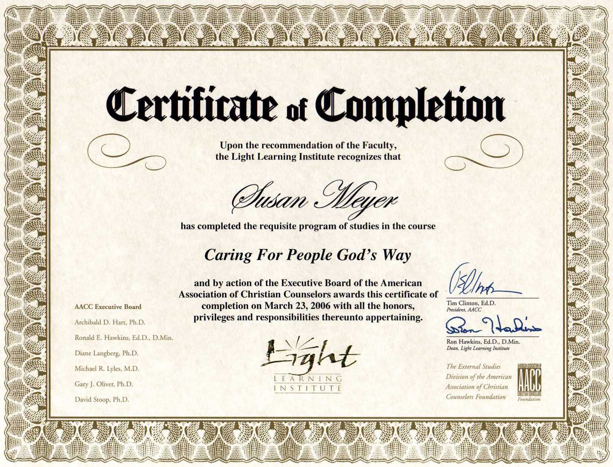

NYS Certified

Put the ones you love, under an angel's wing.
Email FacebookBrought to you by
DevTips-Starter-Kit
| -- assets/
| | -- css/
| | | -- 1-tools/
| | | | -- bourbon/
| | | | -- fonts.sass
| | | | -- normalize.sass
| | | | -- vars.sass
| | | -- 2-basics/
| | | | -- body-elements.sass
| | | | -- links.sass
| | | | -- selection-colors.sass
| | | | -- typography.sass
| | | -- 3-modules/
| | | | -- example-module.sass
| | | | -- example-module.sass
| | | -- 4-pages/
| | | | -- example-page.sass
| | | -- main.sass
| | -- js/
| | | -- jquery.js
| | | -- functions.js
| | -- img/
| -- favicon.ico
| -- readme.md
| -- index.html